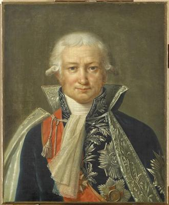
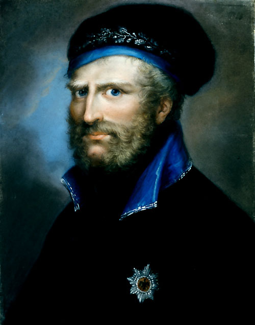
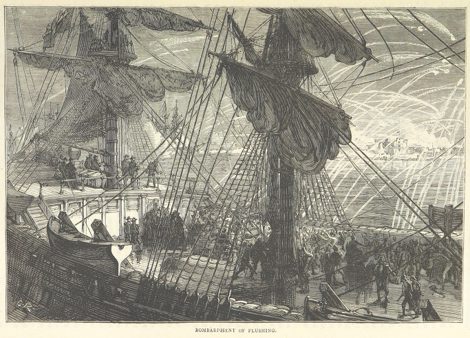
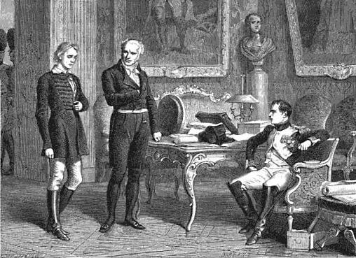
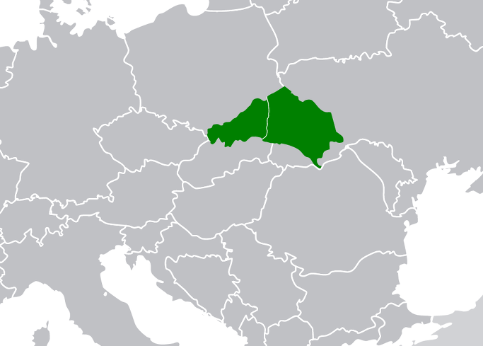
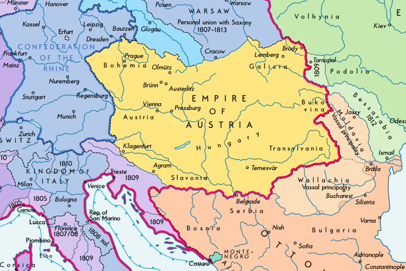

땅과 돈과 피의 평화 - 쇤브룬 (Schönbrunn) 조약
게시: 2017-11-18T21:21:46+09:00
7월 11일 츠나임 휴전이 이루어지자, 전투 현장에 있던 장교들과 병사들은 양측 모두 안도의 한숨을 내쉬었습니다. 그러나, 총알이 날아오지 않는 안전한 곳에서 전쟁을 하는 사람들에게는 큰 불만의 원인이 되었습니다. 일단 프랑스 측에서는 나폴레옹의 참모들, 특히 참모장 베르티에(Berthier)가 이 휴전에 반대했습니다. 이번 기회에 저 배은망덕한 합스부르크 왕가를 완전히 권좌에서 제거해야 한다는 주장이었지요. 놀랍게도 오스트리아 측, 즉 합스부르크 궁정에서도 불만이 터져 나왔습니다. 아직 충분히 싸울 수 있는데 왜 패배를 인정하고 휴전하느냐는 것이었지요. 양측의 불만은 다 근거가 있었습니다. 프랑스로서야 이기고 있는데 왜 그만 하느냐는 불만을 가지는 것이 당연했습니다. 오스트리아 측도 비록 물러서기는 했지만 사상자 수도 비슷하게 나는 등 잘 싸웠고, 아직 20만 정도의 병력을 긁어모을 수 있으니 더 싸울 수 있다고 생각했습니다. 원래 입으로 하는 전쟁처럼 쉬운 것이 없는 것입니다.
하지만 이번 전투에서도 직접 부상을 입어 가며 일선에서 싸운 카알 대공은 자신의 군대가 나폴레옹의 그랑다르메의 상대가 되지 않는다는 것을 분명히 깨닫고 있었습니다. 물론 오스트리아군의 질적 향상은 분명한 것이었습니다. 특히 바그람 전투에서 양측이 보여준 작전이 놀랍도록 똑같다는 것, 즉 카알이나 나폴레옹이나 중앙에서 견제하며 서로 우익으로 승부를 보려 했다는 점은 시사하는 바가 컸습니다. 이제 그런 기동전은 프랑스군만의 전유물이 아니었습니다. 하지만 또 분명한 점은 그렇게 동일한 작전으로 싸웠어도 분명히 패자는 오스트리아군이었다는 것이었습니다. 카알 대공은 이런 말을 참모들에게 하며 나폴레옹에게 휴전을 제의했습니다.
"국가의 운명을 걸기에는 전쟁의 결과라는 것은 항상 불확실하다. 그러나 전쟁의 참상으로 인한 피해는 언제나 확실하다."
나폴레옹이 휴전 제의를 받아들인 것은 나폴레옹을 이해한다면 매우 당연한 일이었습니다. 나폴레옹을 피와 영광에 굶주린 전쟁광으로 보는 견해가 강하지만, 사실 그는 언제나 평화를 선호했습니다. 그가 관심이 있는 것은 자신이 세운 제국의 번영이었고, 그를 위해서는 전쟁이 자꾸 일어나서 막대한 전비가 소모되는 일이 없어야 했습니다. 다만 그가 추구하는 제국의 번영은 기술 혁신에 의한 생산성 향상이 아니라 강압에 의한 일방적 통상에 의한 것이었고, 그로 인해 주변국들은 경제적 피해를 입게 되며, 이는 결국 끝없는 전쟁을 불러온다는 사실을 나폴레옹이 인정하지 않으려 했던 것이 비극이었지요. 나폴레옹은 카알 대공의 휴전 요청을 반갑게 받아들였습니다.
츠나임 휴전의 조건은 꽤 합리적이었습니다. 이 휴전은 매 30일마다 갱신되며, 종전 협상이 결렬되더라도 적대 행위를 재개하려면 15일 이전에 상대방에게 통보해야 한다는 것이었습니다. 이건 어디까지나 휴전 협정일 뿐 항복이 아니었으니까, 언제든 전투가 재개될 수 있었습니다. 따라서 나폴레옹은 이 기간 중 한편으로는 유리한 종전 협상을 이끌어내기 위해 외교적 역량을 총동원하는 한편, 혹시라도 재개될 전투에 대비하여 그의 군단들을 재편성하느라 바빴습니다.
하지만 프랑스군의 질적 저하는 나폴레옹의 눈에도 꽤 분명히 보였습니다. 먼저, 기강이 과거 아우스테를리츠 때와는 많이 달랐습니다. 바그람 승전 이후 카알 대공의 잔존 부대를 추격하는 과정에서, 일부 병사들은 오스트리아 마을에서 와인 창고를 제멋대로 약탈하고 난동을 부렸습니다. 막 원수로 승진한 우디노가 이 현장을 보고 병사들을 제지하려하다 술에 취한 병사들에게 맞아 죽을 뻔 하는 사건이 있을 정도였습니다. 나폴레옹은 7월 중순부터, 기강 면에서나 군복 및 장비 등 외양 면에서도 너덜너덜해진 그의 부대들을 재편성했습니다. 베르나도트가 이끌던 작센 군단처럼 무려 60%의 손실을 내며 와해된 일부 부대는 아예 해체하여 다른 군단에 배속시키고, 후방에서 보충병을 받아 병력을 충원했습니다. 또 병참 사령관 다뤼(Daru) 백작에게 지시하여 그라츠(Graz), 린츠(Linz), 빈(Wien) 등의 공장을 돌려 망토와 자켓, 바지와 각반, 군화 등 군복 생산에 열을 올렸습니다. 이렇게 병사들에게 새 군복을 입힌 뒤, 나폴레옹은 병사들을 끊임없는 제식 훈련과 사열로 괴롭혔습니다. 병사들의 사기 진작을 위해서는 자긍심을 갖도록 군복부터 제대로 갖춰야 하며, 또 한가로운 시간을 줘서는 안된다는 것이 그의 지론이었거든요. 예비군복만 입으면 우리나라 남성들에게 벌어지는 현상을 보면, 이는 어느 정도 맞는 말 같습니다. 물론 병사들을 무조건 괴롭히기만 한 것은 아니었습니다. 전투에서 팔다리를 잃은 장교와 병사들에 대한 연금(사병들은 500 프랑, 장교들은 4000 프랑, 1프랑은 현재가치로 대략 1만원 정도)도 발표하고 고아가 된 아이들을 (형식적이지만) 입양하며 1인당 500~2000 프랑씩의 보상금을 지급했습니다. 여름철 모기에 의한 열병 발생을 피하기 위해 병사들 주둔지를 고지대로 옮기는 등의 조치도 취했고 8월 15일에는 나폴레옹의 생일 축하를 위해 배식량을 2배로 늘려 고기와 함께 흰빵 세 덩어리와 와인 2병 씩을 베풀기도 했습니다.
뿐만 아니라 진짜 전쟁 수행 능력을 위한 무기와 탄약 확충에도 애를 썼습니다. 당시 중공업 생산 능력이야 뻔했으므로, 모든 것을 신품에 의존할 수는 없었던 나폴레옹은 병사들에게 인센티브를 주어가며 전장에 흩어진 무기류를 회수했습니다. 가령 총검 1개 또는 파손된 머스켓 소총 1자루를 가져오는 병사에게는 15수(sous, 현재 가치로는 약 8천원)를, 온전한 머스켓 1자루를 가져오면 30수(현재 가치로 약 1만6천원)를 주었습니다. 나폴레옹의 탄약고에 바닥이 보이는 것도 문제이긴 했습니다. 바그람 전투 40시간 동안 양군의 포병대는 각각 9만~10만발 정도를 쏘아댔습니다. 이는 당시 8파운드 포의 발사 속도를 2분당 1발이라고 볼 때, 400문의 대포가 8시간 동안 정말 잠시도 쉬지 않고 기계처럼 쏘아댈 수 있는 양이었습니다. 이걸 다시 채워놓아야 했는데, 다행히 비엔나 무기고가 나폴레옹의 손아귀에 있었으므로 이 문제는 꽤 쉽게 해소가 되었습니다.
프랑스 측이 이러고 있는 사이, 오스트리아 측은 내분에 빠져 있었습니다. 프란츠 황제가 카알 대공의 휴전을 일단 받아들인 것은 전쟁 재개를 위한 힘과 시간을 비축하기 위한 것이었습니다. 그는 바그람에 터무니없이 늦게 나타난 요한 대공의 감언이설에 넘어가 바그람의 패전은 물론, 요한 대공이 늦게 나타난 것도 카알 대공이 명령서를 너무 늦게 보냈기 때문이라며 카알을 비난했습니다. 게다가 철부지 요한의 터무니없는 전략 조언을 받아들여 바그람과 폴란드, 그리고 슬로바키아에서 철수해 온 군대를 헝가리에서 재규합한 뒤 프로이센과 연합하여 나폴레옹을 친다는 (서류상으로만) 원대한 계획을 짜고 있었습니다. 카알은 이에 강력 반발하며 사직서를 내고 영원히 군문을 떠났습니다. 합스부르크 궁정에도 바보들만 모인 것은 아니었기 때문에 결국 바그람에서의 요한의 뻘짓은 진상이 밝혀졌고 또 프로이센도 바보가 아니었으므로 프란츠의 뇌내망상은 곧 사그라들었습니다.
그러면 종전 협정이 신속히 이루어져야 했는데, 그게 그렇게 되지 않았습니다. 나폴레옹은 승자였고, 프란츠는 더 잃고 싶지가 않았거든요. 나폴레옹은 외무부 장관 샹파니(Jean-Baptiste de Nompère de Champagny)를 내세워 협상을 한 것에 반해, 오스트리아 측은 메테르니히에서 스타디온(Stadion) 및 벨가르드로, 다시 리히텐슈타인으로 자꾸 협상 대표를 바꿔댔습니다. 나폴레옹은 이들에 대해 이렇게 평가했습니다.
"메테르니히는 언행이 불일치하는 인간이고, 스타디온(Stadion)은 바보이며, 벨가르드는 사리분별을 못한다. 리히텐슈타인은 재빨리 입장을 바꾸는 기회주의자이다. 카알 대공만 말이 통하는 사람인데 지금은 관직을 내려놓았다. 게다가 황제 프란츠는 착한 사람이긴 하지만 항상 마지막으로 대화한 사람의 의견을 따르는 팔랑귀다."

(탈레랑의 뒤를 이어 나폴레옹의 외무부 장관을 한 샹파니 Jean-Baptiste de Nompère de Champagny 입니다. 그는 나폴레옹보다 13살 연상인 귀족 출신으로서, 원래 해군 장교로 13년간 복무한 바 있었습니다. 대혁명 때 그는 귀족임에도 제3 계급 편을 들었고, 정작 혁명 이후엔 몇 년간을 아무 관직도 맡지 않고 조용히 지냈는데, 나폴레옹이 그를 불러들여 내무부 일을 맡겼습니다. 그는 매우 우수한 행정가였고 백일천하 때도 나폴레옹과 뜻을 함께 했습니다.)
하지만 협상이 어려웠던 이유는 오스트리아 측의 인물난보다는 나폴레옹의 요구가 오스트리아로서는 받아들이기 어려울 정도로 큰 것이었기 때문이었습니다. 그가 원한 것은 라틴어로 uti possidetis의 원칙, 즉 현재 점유한 땅을 그대로 새로운 국경으로 하자는 것이었습니다. 이럴 경우 오스트리아는 전체의 1/4인 약 4~5백만의 인구를 잃는 셈이었으니 받아들일 수 없었습니다. 이렇게 협상이 지지부진하자, 9월 중순 들어 나폴레옹은 크게 인심쓰듯 에누리를 해줍니다. 즉 아우스테를리츠 전투 이후 맺은 프레스부르크(Pressburg) 조약 수준으로 경감해주겠다는 것이었지요. 그래도 오스트리아는 여전히 3~4백만의 인구를 잃어야 했고, 이 조건을 받아들일 수 없었습니다.
일이 이렇게 되자 초조해진 것은 나폴레옹이 되었습니다. 비록 오스트리아와는 정전 상태였지만 그의 제국 이곳저곳에서는 계속 총성이 울리고 있었던 것입니다. 일단 스페인 전선의 문제가 심각했습니다. 게다가 티롤 산골뜨기들의 반란도 아직 진압되지 않았고, 독일 지역에서도 민족주의에 기반한 반란이 있었습니다. 예나-아우어슈타트 전투에서 치명적인 부상을 입고 죽은 브라운슈바이크 공작의 영토는 나폴레옹이 브라운슈바이크 가문으로부터 빼앗아 자기 동생인 제롬의 베스트팔렌 왕국에 편입시킨 바 있었습니다. 그 공작의 아들이자 빼앗긴 영토의 주인인 젊은 브라운슈바이크 공작 빌헬름(Friedrich Wilhelm)이 이를 갈고 있다가 이번 제5차 대불동맹전쟁의 틈을 타 검은 군단(Schwarze Legion)을 편성하여 반란을 일으켰던 것입니다. 빌헬름은 바그람 전투로 인해 대세가 기울었는데도 항복을 거부한 채 전투를 벌여가며 북진, 마침내 베저(Weser) 강 하구에서 영국 해군과 합류하여 영국으로 건너가 큰 환대를 받았습니다.

(젊은 브라운슈바이크 공작 프리드리히 빌헬름입니다. 그가 영국으로 데려간 검은 군단은 브룬스윅 연대 Brunswick Oels Jäger로 재편되어 스페인 전쟁에서 계속 활약했습니다. 빌헬름 본인은 워털루 전투 직전에 벌어진 콰트르 브라 Quatre Bras 전투에서 전사했습니다.)
하지만 가장 나폴레옹의 신경을 건드린 것은 역시 영국이었습니다. 제5차 대불동맹전쟁은 오스트리아 뿐만 아니라 영국도 참전국이었습니다. 영국은 오스트리아에게 '대영제국의 황금'을 들이부어주겠다면서 전비 걱정은 하지 말라고 큰소리침과 동시에, 네덜란드에 상륙하여 프랑스의 배후에 제2 전선을 만들어주겠다고도 약속했습니다. 하지만 영국은 역시 입으로만 주전파였습니다. 입으로 나불거릴 때는 인심이 후했으나, 정작 오스트리아에 전달된 현물은 25만 파운드의 은괴 뿐이었습니다. 게다가 네덜란드에 대대적인 상륙전을 펼치겠다는 약속은 실행이 지지부진하여, 실제로 병력이 영국에서 출항한 것은 이미 바그람 전투가 끝난 뒤였습니다. 그래도 안 오는 것보다는 늦는 것이 낫다고, 사망한 윌리엄 피트 수상의 형인 채텀 백작(John Pitt, 2nd Earl of Chatham)이 이끄는 약 4만의 영국 원정대는 7월말 네덜란드의 스헬트(Scheldt) 강 하구의 주요 항구 안트베르펜(Antwerpen, 영어로는 Antwerp)에 상륙했습니다. 이 정도면 당시 영국 수준에서는 대단한 규모의 원정대였습니다. 하지만 이들은 거의 좌초된 고래 노릇을 했습니다. 블리싱언(Vlissingen, 영어로는 Flushing)의 요새를 치열한 포격전 끝에 함락시킨 것까지는 좋았으나, 영국군은 너무 느리고 소극적인 작전을 펼치다 전체 작전을 말아먹었습니다. 이들이 어느 정도로 무능했는가 하면, 바그람에서 온갖 실책을 저지르다 나폴레옹에게 쫓겨나 파리로 돌아온 베르나도트가 현장에 달려와 안트베르펜의 방어진을 재편성할 때까지 아무 공격도 못하고 미적거렸습니다. 결국 이들은 스헬트 강가에서 악명 높은 네덜란드 저지대 모기에게 시달리다 집단으로 열병에 걸려 픽픽 쓰러졌고, 결국 1만6천의 인명 손실과 8백만 파운드의 전비만 낭비한 채 아무 것도 이루지 못하고 9월부터 철수해야 했습니다.

(이 작전을 영국에서는 월체렌 Walcheren (네덜란드어로도 볼체렌) 작전이라고 부릅니다. 작전 초기 기세를 올린 블리싱언 포격 장면입니다.)
나폴레옹도 영국의 사정상 그런 대규모 원정대를 오래 유지 못할 것이라고 판단하고 있었으나, 아무튼 신경이 쓰이는 것은 어쩔 수 없었습니다. 그러다 사건이 벌어집니다. 10월 12일, 쇤브룬 궁전에서 나폴레옹이 병사들을 사열하던 때였습니다. 그 주변에는 프랑스군의 사열식, 그리고 나폴레옹 본인을 구경하기 위해 빈 시민들도 많이 웅성거리고 있었는데, 그 중 한 청년이 인파를 헤치며 나폴레옹이 있는 연단으로 다가오는 것이 랍(Rapp) 장군의 눈에 들어왔습니다. 가만 보니 그 청년은 바로 전에 호위 책임자인 랍 장군에게 나폴레옹과의 면담을 요구하다 쫓겨난 청년이었습니다. 랍은 불길한 생각이 들어 즉각 그 청년의 체포를 명했고, 몸을 뒤져보니 품에 식칼이 들어있었습니다. 조사를 해보니 슈탑스(Friedrich Staps)라는 그 청년은 모든 것을 술술 불었습니다. 나폴레옹을 암살하여 독일 민족을 해방시키려고 했다는 것이었습니다. 배후를 조사해보았으나 아버지가 목사라는 점 빼고는 정말 정치적 종교적인 배경도 전혀 없었고, 그저 에르푸르트(Erfurt)에서 상점일을 하는 평범한 17세 청년이었습니다.
호기심이 생긴 나폴레옹은 그와 직접 면담을 하고 이것저것을 캐물었습니다. 정말 이 청년의 배후가 따로 없다는 것을 확신한 나폴레옹은 슈탑스에게 '널 용서하고 풀어준다면 어떻게 하겠는가'라고 물었고, 이 청년은 겁도 없이 '그래도 다시 당신을 암살하겠소'라고 답했습니다. 나폴레옹은 이 청년의 태도에 나름 큰 충격을 받았습니다. 유럽 대륙이 자신에 의해 통합되면 기존 왕족 및 귀족들의 폭정에서 벗어나 공정한 나폴레옹 법전 하에 번영을 이룰 수 있다고 생각하고 있었는데, 정작 자신의 통치를 받아들이는 사람들의 생각은 다를 수 있다는 것을 이 순진무구한 청년을 통해 뼈저리게 깨달은 것입니다.

(슈탑스를 신문하는 나폴레옹의 모습입니다. 옆에 서있는 사람은 나폴레옹의 주치의 코비사르 Jean-Nicolas Corvisart 인데, 연인인 발레프스카가 임신했다는 것을 알게된 나폴레옹이 발레프스카를 돌보기 위해 9월에 이 양반을 쇤브룬 궁전에 소환했었습니다.)
그래서인지 나폴레옹은 오스트리아의 전권대사인 리히텐슈타인 대공에게 배상금 및 토지 할양을 15% 더 깎아주며 서둘러 종전 협정을 맺었습니다. 슈탑스의 암살 시도가 적발된지 바로 2일 후인 10월 14일, 샹파니와 리히텐슈타인은 쇤브룬 조약(Traité de Schönbrunn)에 서명합니다. 이 조약 내용은 그대로 여전히 가혹한 것이었습니다. 오스트리아는 프랑스에게 크로아티아, 카르니올라(Carniola, 슬로베니아어로 Kranjska, 지금의 슬로베니아 서부), 트리에스테(Trieste, 이탈리아 북동부 해안) 지역, 카린티아(Carinthia, 독일어로 Kärnten, 지금의 오스트리아 남부 지방)를 빼앗겼습니다. 이 영토들은 프랑스의 직할령인 일리리아 지방(Provinces illyriennes)을 이루어, 프랑스를 대서양과 지중해 뿐만 아니라 이오니아 해까지 접한 대국으로 만들어주었습니다. 이로써 오스트리아는 해안 지방을 완전히 빼앗긴 내륙국으로 전락했지요. 뿐만 아니었습니다. 바이에른 왕국에게는 인(Inn) 강 상류 지역과 잘츠부르크(Salzburg)를 빼앗겼고, 우크라이나와 인접한 오스트리아-헝가리 영토인 갈리시아는 반으로 나뉘어 각각 바르샤바 공국(정확하게는 바르샤바 공국을 소유한 작센 왕국)과 러시아에게 빼앗겼습니다. 특히 러시아는 말로만 프랑스의 동맹국이었고 실제로는 오스트리아와의 전쟁에서 총알 한발 보태준 것이 없었는데도 영토를 나누어줄 정도로 나폴레옹은 러시아와의 동맹을 중시했습니다. 이러한 조치로 인해 오스트리아는 전체 인구의 거의 20%를 상실하게 되었습니다.

(원래 갈리시아 Galicia는 스페인 쪽에 있는 지방명이지만, 이 중부 유럽의 갈리시아는 그와는 아무 상관이 없고 Halychyna 대공이라는 군주 이름에서 나온 지방명이 영어로 번역되는 과정에서 그렇게 불리게 된 것입니다.)

(쇤브룬 조약의 결과로 만들어진 지도입니다. 이제 오스트리아는 내륙국이 되었고, 이탈리아와 발칸 반도 사이의 바다인 이오니아 해는 프랑스의 호수가 되었습니다. 저 지도 속의 이탈리아 왕국의 왕은 바로 나폴레옹 본인이고, 그 밑에 있는 나폴리 왕국의 왕은 매제인 뮈라였거든요.)
오스트리아는 영토와 함께 돈도 잃어야 했습니다. 4년전 아우스테를리츠 패전으로 인한 전쟁 배상금은 4천만 프랑(현재 가치로 약 4000억원)이었습니다. 이번엔 더 큰 규모의 군대가 동원된 만큼 배상금도 더 컸습니다. 당시 오스트리아 영토에 주둔한 프랑스군의 급여만도 한 달에 400만 프랑에 달했으니까요. 그렇기에 막판에 슈탑스 사건에 충격을 받은 나폴레옹이 15% 깎아주었음에도 오스트리아는 무려 8천5백만 굴덴(1 gulden = 은 11.69 그램, 즉 8천5백만 굴덴은 약 6300억원)의 배상금을 부담해야 했습니다. 영국이 생색내면서 보태준 전비가 은 25만 파운드, 즉 970만 굴덴에 불과했던 것을 생각하면 정말 손해보는 장사를 한 셈이었지요. 거기서 끝나는 것이 아니었습니다. 나폴레옹은 철저히 모든 것을 현지 조달하느라 오스트리아 각지에서 많은 식량과 물자, 탄약과 장비를 징발했고 그 잉여분도 많이 남아있었는데, 그를 공매에 붙여 매각한 대금 5천만 프랑(현재 가치로 약 5000억원)도 고스란히 나폴레옹의 차지가 되었습니다.
그렇게 영토와 현금, 현물을 털린 것도 모자라 추가 제재 조치도 있었습니다. 오스트리아군의 질적, 양적 팽창에 큰 역할을 했던 카알 대공의 작품, 즉 국민방위군(Landwehr)을 해체하고 정규군도 현재의 절반 수준인 15만 이하로 감축해야 했습니다. 게다가 굴욕적이게도, 빈을 둘러싼 성벽을 허물고 빈을 비무장 도시로 만들어야 했습니다. 덕분에 1684년 오스만 투르크의 포위 공격을 막아내었던 그 유서깊은 비엔나의 성벽이 해체되었습니다. 기타 주요 요새들도 해체되어야 했습니다.
베르티에가 이번 기회에 합스부르크 가문의 해체를 주장하는 것에 비하면 매우 관대한 조치지만, 이를 받아들여야 했던 프란츠 1세로서는 엄청나게 가혹한 조건이었습니다. 그래서 쇤브룬 조약서에 서명을 한 오스트리아측 전권대사 리히텐슈타인 대공은 합스부르크 임시 행궁에 돌아와서는 '조약 문서와 함께 내 머리도 바칩니다'라며 사죄해야 했습니다. 하지만 뾰족한 방법이 없었던 프란츠도 결국 이 조약을 비준해야 했지요.
하지만 나폴레옹은 쇤브룬에 앉아 프란츠의 조약 비준 같은 것을 기다리고 있지 않았습니다. 그는 베르티에에게 뒷마무리를 지시한 뒤, 조약 서명 불과 2일 뒤인 10월 16일 파리를 향해 출발했습니다. 그가 이렇게 서둘러 쇤브룬 궁을 떠난 것은 스페인과 네덜란드, 그리고 프랑스 국내의 금융 시장 등 골치아픈 문제도 해결해야 했고 또 조세핀과의 이혼 문제도 결정을 지어야 했기 때문이었습니다. 그러나 결정적인 이유는 바로 다음날 벌어질 일 때문이 아니었을까 합니다. 나폴레옹이 쇤브룬 궁을 떠난 바로 다음날, 나폴레옹이 남기고 간 지시에 따라 같은 독일어를 쓰는 뷔르템베르크(Wurtemberg) 병사들이 17살 짜리 청년을 쇤브룬 궁전 밖으로 데리고 나왔습니다. 이들은 청년을 담벼락에 세워 놓고 총살을 집행했습니다. 슈탑스였습니다. 그의 피는 나폴레옹의 꿈과 그의 제국에 근원적인 어두운 그림자를 드리웠습니다.
Source : The Reign of Napoleon Bonaparte by Robert Asprey
The Life of Napoleon Bonaparte by William Milligan Sloane
Napoleon Conquers Austria: The 1809 Campaign for Vienna by James R. Arnold
https://www.napoleon.org/en/history-of-the-two-empires/timelines/the-treaty-of-vienna-14-october-1809/
https://en.wikipedia.org/wiki/Treaty_of_Sch%C3%B6nbrunn
https://en.wikipedia.org/wiki/Friedrich_Staps
https://en.wikipedia.org/wiki/Walcheren_Campaign